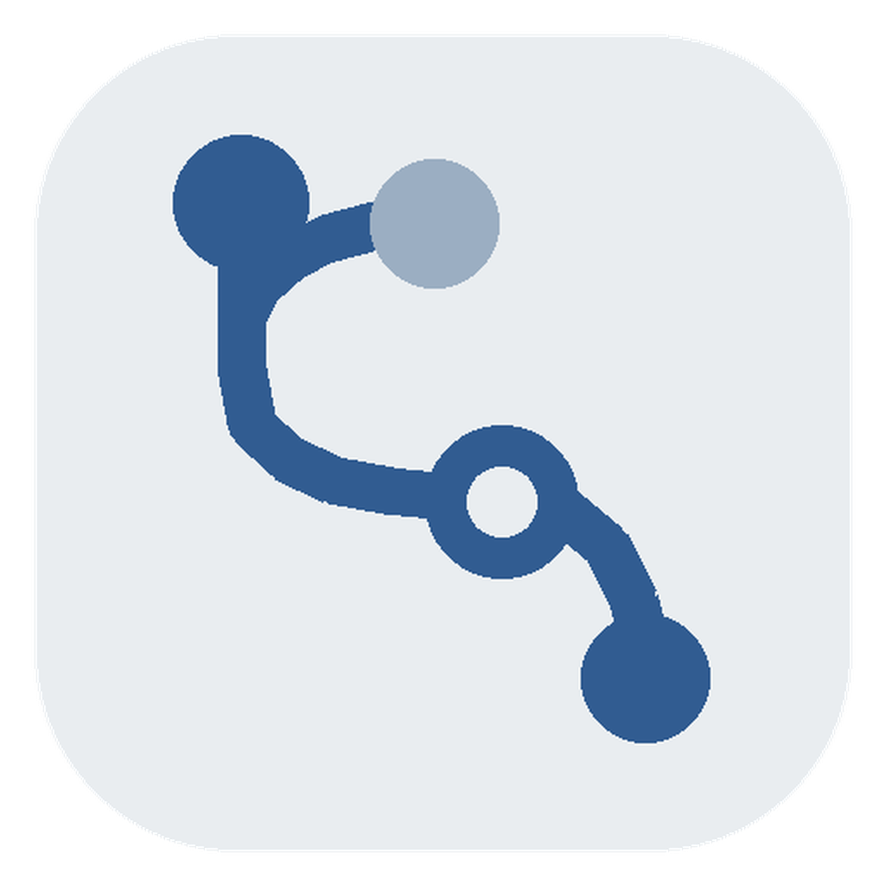

Desktop Status
Not configured
Add a new API provider or choose a preset
Choosing one fills the API URL and suggested models. You still enter your own API key.
Manage configured API providers
Claude Desktop connects to this app first. This app translates Claude model names to the selected provider models, then forwards requests to the API. Keep this app running in the background for third-party providers. Your upstream API key stays in local config and is not written directly into Claude Desktop.
Connect Claude Desktop to this app
Close and reopen Claude Desktop
Ask questions in Claude Desktop as usual
View local forwarding status and request logs
Global preferences and app information
Controls Claude Desktop's Chat tab when Junction applies its connection.
HTTP/SOCKS proxy for upstream APIs. Leave empty to use system environment variables (HTTP_PROXY / HTTPS_PROXY / ALL_PROXY). Format: host:port, http://host:port, or socks5://host:port
When enabled, the local gateway removes the dynamic billing header injected by Claude Code to reduce prompt cache fragmentation on third-party gateways.
Anthropic-compatible APIs are the stable path. OpenAI Chat, new-api, CPA, and OpenCode Go are experimental and require separate tool-call testing.
The diagnostics package redacts API keys, gateway keys, Authorization headers, and tokens before sharing.
Exported config includes API keys. Keep it only on trusted devices.
Only Anthropic-compatible configs are imported. OpenAI formats are shown but skipped to avoid conversion risk.

Add a provider, then complete setup in three steps.
Choose a preset, enter the API key, and adjust model mapping if needed.
Click Apply to Claude Desktop. This app writes the connection info Claude Desktop needs.
After restart, ask as usual. Keep this app running in the background while it forwards messages to the active provider.